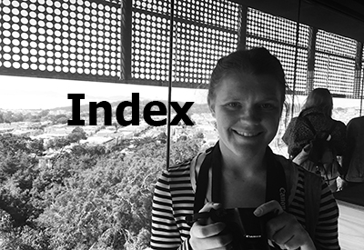
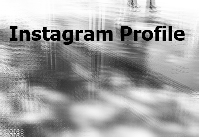
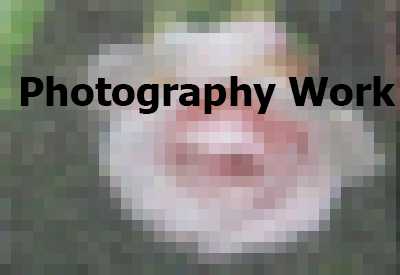
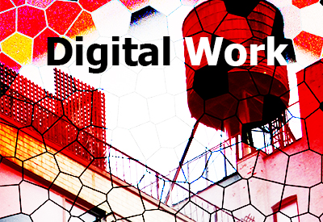
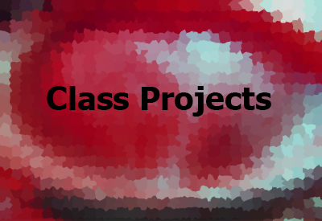
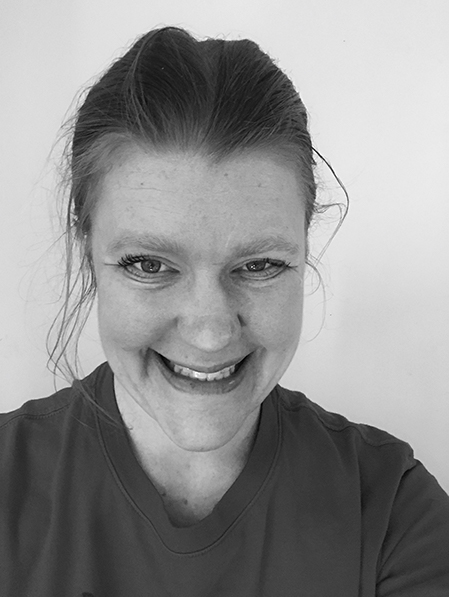

Portfolio of my Art





ABOUT ME

Alicia Breinke is a digital media artist whose work ventures into the realms of fine art, digital art, and photography. She enjoys incorporating artistic, surreal, and current, social themes into her work.